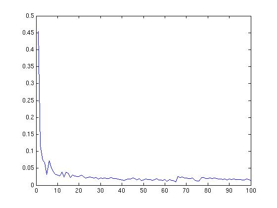

| MDP Toolbox for MATLAB |
| MDP Toolbox for MATLAB |
mdp_Q_learning
Solves discounted MDP with the Q-learning algorithm (Reinforcement learning).
Syntax
[Q, V, policy, mean_discrepancy] = mdp_Q_learning(P, R, discount).
[Q, V, policy, mean_discrepancy] = mdp_Q_learning(P, R, discount, N)
Description
mdp_Q_learning computes the Q matrix, the mean discrepancy and gives the optimal value function and the optimal policy when allocated enough iterations. It uses an iterative method.
No additional display in verbose mode.
Arguments
P can be a 3 dimensions array (SxSxA) or a cell array (1xA), each cell containing a sparse matrix (SxS).
R can be a 3 dimensions array (SxSxA) or a cell array (1xA), each cell containing a sparse matrix (SxS) or a 2D array (SxA) possibly sparse.
discount is a real which belongs to ]0; 1[
N is an integer that must be greater than the default value.
By default, N is set to 10000.
Evaluations
Q is a (SxA) matrix.
mean_discrepancy is a vector of V discrepancy mean over 100 iterations. Then the length of the vector for the default value of N is 100.
V is a (Sx1) vector.
policy is a (Sx1) vector. Each element is an integer
corresponding to an action which maximizes the value function.
Example
>> % To be able to reproduce the following example, it is necessary to init the pseudorandom number generator
>> rand('seed',0)
>> P(:,:,1) = [ 0.5 0.5; 0.8 0.2 ];
>> P(:,:,2) = [ 0 1; 0.1 0.9 ];
>> R = [ 5 10; -1 2 ];
>> [Q, V, policy, mean_discrepancy] = mdp_Q_learning(P, R, 0.9);
>> Q
Q =
31.8074 39.0360
32.7959 26.7980
>> V
V =
39.0360
32.7959
>> policy
policy =
2
1
>>plot(mean_discrepancy)

In the above example, P can be a cell array containing sparse matrices:
>> P{1} = sparse([ 0.5 0.5; 0.8 0.2 ]);
>> P{2} = sparse([ 0 1; 0.1 0.9 ]);
The function call is unchanged.
| MDP Toolbox for MATLAB |
|